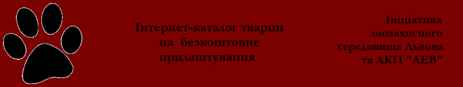
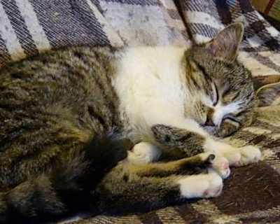

|  |
Руді дорослі коти (1)
Троє
дорослих рудих котів шукають господарів. На тимчасовій перетримці в
притулку "Милосердя". Контактний телефон: 243 41 53, 067 67 53 541 Ксеня На прилаштування 26.01.15 Опубліковано: 26.01.15
Молода смугасто-біла кішка (4)
Пухнаста
смугасто-біла киця, вік біля 2 років, надзвичайно потребує домівки, так
як не є забрана з вулиці. З ветоглядом та стерилізацією допоможуть.
Контактний телефон: 097 297 2907 На прилаштування 26.01.15 Опубліковано: 26.01.15
Маня, триколірний окрас
Молоденька 1.5 року, товстенька розумна кішечка з щасливим триколірним окрасом. Стерилізована, вакцинована, вихована. Контактний тел. 067-878-57-05, 063-072-50-39 Ліда На прилаштування 29.01.15 Опубліковано: 29.01.15
Чорно-білий кіт (5)
Кіт, 2 роки, ласкавий до людей, з іншими тваринами не сходиться, підійде для проживання у селі. Контактний телефон: 0981956577 На прилаштування 30.01.15 Опубліковано: 30.01.15
Молода смугаста кішка (7)
Ласкава
та ніжна, класичного окрасу "матроскін" 5-місячна кішечка. Привчена до
лотка, стерилізована. Контактний телефон: 067 395 00 90 На прилаштування 30.01.15 Опубліковано: 30.01.15
Джуніор, російська блакитна
Джуніор
– метис породи російська блакитна, віком близько 1 року. Домашній,
господарі не змогли забрати при перезді. Оглянутий ветеринаром,
оброблений від паразитів, чистенький, привчений до лотка, кастрований.
Лагідний і грайливий котик хоче бути єдиним улюбленцем, не дуже добре
переносить сусідство з іншими котами. Контактний телефон 0976496147
Олена На прилаштування 30.01.15 Опубліковано: 30.01.15
Рудий кіт (8)
Це
той, якого колись людина образила, і який погодився повірити нам
вдруге. Вже рік кіт знаходиться на перетримці у невеличкій кімнаті, бо
поряд в квартирі постійно є собаки з якими кіт ворогує. Дуже ласкаве
створіння. Кастрований. Контактний телефон: 063 1471891 Адель На прилаштування 30.01.15 Опубліковано: 30.01.15
Біло-сіра кішка (11)
Молода, чарівна, пухнаста, біло-сіра кішечка. Знаходиться в Сокільниках. Контактний телефон: 093 43 43 756 На прилаштування 30.01.15 Опубліковано: 30.01.15
Триколірні кішечки (12)
Молоді, триколірні кішечки. Знаходяться в Сокільниках. Контактний телефон: 093 43 43 756 На прилаштування 30.01.15 Опубліковано: 30.01.15
Мася
Дуже добра та ласкава муркотуха. Стерилізована. Вік біля 1 року. Привчена до лотка. Оброблена від паразитів. Контактний телефон: 097 288 73 63 Ірина На прилаштування 30.01.15 Опубліковано: 30.01.15
Чорна пухнаста киця (13)
Кішечка стерилізована, вік близько півроку, ласкава і добра, привчена до лотка. Контактний телефон: 097 288 73 63 На прилаштування 30.01.15 Опубліковано: 30.01.15
Кускус
1
рік, ласкавий, ручний, діловитий. Стерильний. До лоточка привчений.
Котик з перетримки, де є дуже велика кількість тваринок. Контактний
телефон: 093 624 2473 Марія На прилаштування 30.01.15 Опубліковано: 30.01.15
Біло-сірий кіт (14)
Котик з перетримки, де є дуже велика кількість тваринок. Контактний телефон: 093 624 2473 Марія На прилаштування 30.01.15 Опубліковано: 30.01.15
Триколірна кішечка (15)
Молоденька
триколірна киця. Приблизний вік 1 рік. Чемна, акуратна, до лотка
привчена, комунікабельна, жвава, грайлива. Стерилізована. Контактний
телефон: 098 19 56 577, 066 37 20 964 Наталія На прилаштування 02.02.15 Опубліковано: 02.02.15
Чорна кішка (16)
Чорна граційна киця. Приблизний вік 7 міс. Контактний телефон: 098 19 56 577, 066 37 20 964 Наталія На прилаштування 02.02.15 Опубліковано: 02.02.15
Кішка, чекрепаховий окрас (17)
Лагідна, трішки ляклива, черепахового окрасу кішечка. Вік 3 місяці. Контактний телефон: 098 19 56 577, 066 37 20 964 Наталія На прилаштування 02.02.15 Опубліковано: 02.02.15
Сіра домашня кішка (18)
Киця
домашня, здорова, відгодована, із надзвичайно гладесенькою шубкою,
великі, довірливі оченята, ніжна, дуже ручна. Господар -
старенький дідусь - потрапив у лікарню, за тваринкою нема кому
подбати. Контактний телефон: 097 45 15 283 Олена На прилаштування 02.02.15 Опубліковано: 02.02.15
Вася
Спокійний, лагідний кіт зараз знаходиться на перетримці і шукає постійний дім. Контактний телефон: 067 95 62 829 Ліда На прилаштування 02.02.15 Опубліковано: 02.02.15
Двоколірне кошеня (19)
 Кішечка, вік десь три місяці, здорова, хороший характер. Контактний телефон: 093 81 57 498 Сергій На прилаштування 02.02.15 Опубліковано: 02.02.15
Сіре, пухнасте кошеня (20)
Надзвичайної
краси кошенятко - мордочка темно-сіра, сам світліший, пухнастий.
Хлопчик, близько 4 місяців, живе на підприємстві. Контактний телефон:
067 45 82 182 Анатолій На прилаштування 02.02.15 Опубліковано: 02.02.15
2 брати (21)
Два
хлопчики, вік до року. Стерилізовані, на вулиці ніколи не були.
Привчені до лотка, характери різні, а разом команда.Один руденький з
білими носочками, білою маніжкою та карими очима (на фото). Другий
бежевий з білими "носочками", білою маніжкою та зеленими очима.
Контактний телефон: 067 79 71 424 Оксана На прилаштування 02.02.15 Опубліковано: 02.02.15
Чорно-біла кішка (22)
Дуже ніжна та лагідна киця. Її сестричку прилаштували і вона сумує. Контактний телефон: 098 19 56 577, 066 37 20 964 Наталія На прилаштування 02.02.15 Опубліковано: 02.02.15
Чотириколірна кішка (23)
Вік
1 рік. Забарвлення у киці рідкісне - чотири кольори. Стерелізована,
вакцинована, ходить у лоточок, лагідна. Контактний телефон: 098 19 56
577, 066 37 20 964 Наталія На прилаштування 02.02.15 Опубліковано: 02.02.15
Біло-чорне кошеня (24)
Дівчинка,
3-4 місяці. Грайлива, лагідна, акуратна, до лотка привчена, від бліх
оброблена. Контактний телефон: 098 19 56 577, 066 37 20 964 Наталія На прилаштування 02.02.15 Опубліковано: 02.02.15
Крупний молодий кіт (25)
Спокійний,
добрий, чемний, тягнеться до людей. Змушений жити на вулиці. Вік -
приблизно 9 місяців. Бажаючим взяти цього красеня гарантують
оплату кастрації + в подарунок лоточок. Контактний телефон: 096 270 61 60 Віка На прилаштування 02.02.15 Опубліковано: 02.02.15
Кішечка мраморного окрасу (26)
Дівчинка,
приблизний вік 3-4 місяці, у лоточок ходить чемно. Мраморний окрас,
муркотлива. Контактний телефон: 098 19 56 577, 066 37 20 964 Наталія На прилаштування 03.02.15 Опубліковано: 03.02.15
Пухнаста, триколірна киця (27)
Сусіди
взяли її внукам, а коли діти награлись, то забули про неї. Зараз
морози, киця на вулиці мерзне днями і ночами. Кішка дуже лагідна та
приємна, вона дуже хоче знайти люблячу сім"ю, адже таке тендітне
створіння просто загине на вулиці. Контактний номер 063 21 51 612 На прилаштування 04.02.15 Опубліковано: 04.02.15
Триколірна кішка (28)
Дівчинка-красуня, при потребі допоможуть у фінансуванні стерилізації! Контактний телефон: 063 21 39 119 На прилаштування 04.02.15 Опубліковано: 04.02.15
Кошеня (29)
4 місяці, хлопчик, м'якенька шубка, привітний та допитливий характер. Контактний телефон: 098 19 56 577, 066 37 20 964 Наталія На прилаштування 06.02.15 Опубліковано: 06.02.15
Рудики (30)
Три
кастрованих хлопчики і одна стерилізована дівчинка. Лагідні, ручні,
прагнуть спілкування з людиною. Їдять сухий корм, користуються лоточком,
обіцяють стати зразковими домашніми улюбленцями. Знаходяться на
перетримці. Контактний телефон: 067 776 88 80 Олена На прилаштування 08.02.15 Опубліковано: 08.02.15
Майкі
Хлопчик,
8 місяців, вакцинований (з довідкою), кастрований, круглощокий,
доглянутий. Зараз на перетримці. Контактний телефон: 067 878 57 05, 063
072 50 39 Ліда На прилаштування 08.02.15 Опубліковано: 08.02.15
Котики-братчики (31)
Близько
8 міс., вакциновані (з довідками), вже кастровані, чистенькі, вміють
користуватись усіма котячими девайсами. Контактний телефон: 067 878 57
05, 063 072 50 39 Ліда На прилаштування 08.02.15 Опубліковано: 08.02.15
Сіро-білий котик (32)
Симпатичний,
грубенький, чистенький. Має білі лапки і грудку, рожевий носик і круглі
оченята. За віком десь місяці 4. Лагідний, знає лоточок. Кастрація,
вакцинація майбутньому господарю в подарунок. Контактний телефон: 067
878 57 05, 063 072 50 39 Ліда На прилаштування 08.02.15 Опубліковано: 08.02.15
Котик з плямкою на носі (33)
Молоденький
котик, ймовірно був домашній, так як дуже лагідний, муркотливий і
чемний. Прибився до одного з під"їздів, де живуть недобрі люди, і довго
це не триватиме. Майбутньому господарю - компенсація вартості огляду
ветеринара. Контактний телефон: 096 55 89 210 Оксана На прилаштування 08.02.15 Опубліковано: 08.02.15
Озі
Особливий
котик, хворий на епілепсію, припадки трапляються кілька раз на рік.
Хороший, ласкавий котик. Молодий - приблизно 1 рік, кастрований. Ірина
097 288 73 63 На прилаштування 08.02.15 Опубліковано: 08.02.15
|

© 2015 www.ratusha.lviv.ua